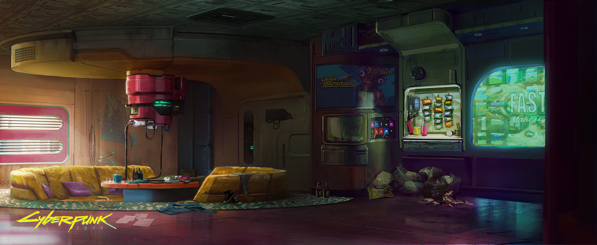

Конапты и Апартаменты
| 1d10 | Наименование | Описание | Район | Обозначение на карте |
|---|---|---|---|---|
| 1 | Жилая сфера Биотехники Альфа |
Ты живешь в Университетском районе на территории кампуса ""Биотехника"" в жилом модуле внутри огромной куполообразной теплицы. Ты можешь свободно ходить на работу по туннелю, но возвращаться домой поздней ночью, проведенной в городе — совсем другое дело. Из-за редкости произростающих растений в Жилой сфере Альфа вход в неё требует пятиминутного обеззараживания после пребывания на улице в загрязненной атмосфере Найт-Сити. Воздух в дезактиваторе высокого давления губителен для натуральных волос. Большинство ваших коллег уже давно перешли на технологию Техноволос. |
Университетский Район | КК1 |
| 2 | Концепция вертикального соседства Континентал Брендс: “Вкусы мира” | Ты живешь в Маленькой Европе, в нескольких минутах ходьбы от офисов Континентал Брендс, в башне с крайне запутанным интерьером. Каждый этаж оформлен как небольшой мировой рынок экзотики, а каждый конапт замаскирован под витрину. Извилистые коридоры, соединяющие их, имеют вид извилистых улиц, дополненных посторонними элементами, такими как вентиляционные отверстия и голограммы уличных торговцев, которые корпорация посчитала необходимыми для создания атмосферы. Несмотря на запутанную планировку жилого комплекса, ""я заблудился"" не считается обоснованной причиной для сотрудников, опаздывающих на встречи. |
Маленькая Европа | КК2 |
| 3 | Жилой комплекс Денжер Гал, он же "Опасная зона" | Ты живешь на воде в Маленькой Европе, в огромном комплексе в стиле арт-деко, расположенном через дорогу от офиса Денжер Гал. Основной цвет интерьера — розовый, дополненный пастельным шартрезом, неоновым фиолетовым, черным светом и сиянием игровых автоматов. Казалось бы, охрана должна быть на высоте, но ваши коллеги регистрируют столько друзей, что каждый вечер кажется пятничной вечеринкой. Странные приспособления, такие как островки с креслами-мешками, стрельбища, уголки для манги, станции с бесплатным Кибблом, автоматы со Смэшом и полосы препятствий, заполняют общие помещения здания, и трудно запомнить, какие объекты находятся на том или ином этаже. Клянусь, половина ""Пираний"" заваливается сюда еженедельно. |
Маленькая Европа | КК3 |
| 4 | Оперативное жилье Милитех | Ты живешь на военной базе Северной Калифорнии в сильно охраняемом здании, принадлежащем Милитех. В комнатах царит спартанская обстановка, но все, что в них есть, сделано из высококачественных, практически вечных материалов. Утверждается, что здание способно выдержать ракетную бомбардировку. Перед входом все гости проходят тщательный досмотр. В сигарном салоне на третьем этаже всегда собирается высшее руководство, обсуждающее удары, контрудары, операции и историю Милитеха. Жизнь здесь — это своего рода допуск к секретности. |
Военная база Сев. Калифорнии | КК4 |
| 5 | Частная земля Нетворк 54 в Вестбруке | Ты живешь в дуплексе корпорации Нетворк 54, на живописных холмах Нового Вестбрука. Ты не можешь ходить на работу пешком, но уединенность стен, окружающих маленький поселок, компенсирует это. Звезды, которым приходится жить в штабквартире, мечтают иметь такую возможность. Иногда они живут вместе со своим ассистентом (твоим соседом), спасаясь от сумасшествия и шума небоскрёба Нетворк 54! Тут проходит множество мероприятий, организованных корпой, но их посещение не является обязательным, поэ-тому на них всегда пусто. Все либо веселятся, либо отдыхают, либо работают, чтобы впечатлить босса — никто из тех, с кем ты работаешь, не настолько глуп, чтобы тратить свое драгоценное время на блины, приготовленные HR. |
Новый Вестбрук | КК5 |
| 6 | Совместное решение проблемы временного жилья Петрохем и СовОил | Ты живешь в Уотсоне в наспех построенном корпоративном здании рядом с офисами Петрохем и СовОйл. Стены настолько дешевые, что верхний слой царапается, когда к ним прислоняешься. Хуже всего то, что благодаря одновременному разрушению предыдущих жилых комплексов обеих компаний ты теперь живешь в одном здании со своим злейшим корпоративным врагом. Это отвратительно, сколько бы служебных записок ни присылало руководство, объявляя такое положение вещей ""временным"". Тем временем ты и твои враги пришли к соглашению: они ездят на левом лифте, а вы — на правом, если, конечно, один из них не сломается. Восточный теннисный корт — для работников Петрохем, западный — для СовОйл. Джакузи на крыше — общее, но это никого не радует. |
Уотсон | КК6 |
| 7 | Передовой хаб Роклин Аугментикс | Ты живешь в Новом Вестбруке, в кампусе Роклин Аугментикс, в центре инноваций, где тебя втиснули в концептуальное пространство, призванное поощрять ""инновации и командную работу"". По крайней мере, конапт у тебя хороший. Здание представляет собой преимущественно коммунальные помещения, которые практически не используются, что, является расточительством. Сколько компьютерных классов нужно в конапте? Ответ: гораздо меньше, чем здесь. А что касается пространств? На каждом этаже есть как минимум один верстак, готовый к использованию (и контролируемый корпорацией на случай, если кого-то осенит инновацией в свободное от работы время) 24/7. Живя здесь, создается впечатление, что руководство не осознаёт, что не все сотрудники Роклин — инженеры. Хотя тем инженерам, которых ты знаешь, все нравится. Так что, хотя бы они довольны. |
Новый Вестбрук | КК7 |
| 8 | Жилой центр корпорации Trauma Team | Ты живёшь в Уотсоне, в корпоративном жилом центре Trauma Team, который соединен с башней Trauma Team туннелем. Апартаменты хорошие, хотя и немного стерильные. Фитнес-центр мирового уровня, в нем есть потрясающая машина для приготовления коктейлей (в особых случаях в нее добавляют настоящее фруктовое пюре!). Ты не знаешь ни одной другой корпорации, которая бы предлагала своим сотрудникам центр экстренной помощи внутри здания. Терапия, проводимая штатным специалистом, хотя и не бесплатна, но превосходна. Говорят, что она также полностью конфиденциальна, хотя в этом нельзя быть уверенным. Ведь все дверные ручки проверяют пульс — кто знает, какие еще данные собирает здание для начальства? |
Уотсон | КК8 |
| 9 | Корпоративная терраса Зиккурат “Висячий сад” | Ты живешь в Верхняя Гавань, в Корпоративной террасе Зиккурат, расположенной в нижней части главной штаб-квартиры Зиккурат. Из окон открывается фантастический вид на воду, но после того, как в Дата Пуле распространилась информация о самоубийстве сотрудника, окна забили. Но есть и хорошие новости! Тебе не придется ездить на работу, поскольку ты уже там. Каждая дверь оборудована экраном, на котором отображается Патч Гардена ее обитателя. Зиккурат ожидает, что ты будешь поддерживать свои аккаунты всоциальных сетях, чтобы не отставать от своих соседей. Оставайся на связи, иначе связь останется без тебя. |
Верхняя Гавань (Аппер Марина) | КК9 |
| 10 | Офисный парк Жирафы "МикроДеревня" | Ты живешь в Индустриальной зоне Хейвуд в Офисном парке Жирафа "МикроДеревня". Этот небольшой район спроектирован таким образом, чтобы походить на красочный поселок грузовых контейнеров, расположенный к югу от здания Старого металлургического завода. Однако за каждой забрызганной краской дверью грузового контейнера в твоём районе скрывается благоустроенный корпоративный офис, а не мрачная коробка. На улице ты с гораздо большей вероятностью найдешь латте, чем дешевый хот-дог, но заплатишь, как за хот-дог. В МикроДеревне продавцы делают скидки на роскошную еду и напитки (но не на общий образ жизни), особенно на алкоголь. В МикроДеревне синтетическая водка стоит дешевле бутилированной воды. По ночам здесь бывает шумно, но если что-то происходит, то все это компенсируется. | Индустриальная зона Хэйвуда | КК10 |
| 1d10 | Наименование | Описание | Район | Обозначение на карте |
|---|---|---|---|---|
| 1 | Переоборудованные квартиры-студии в мотелях |
Ты живёшь в бывшем мотеле на окраине Хейвуда и Санто-Доминго. В 2030-х годах владелец переделал его в многоквартирный дом, чтобы удовлетворить потребности района, и с тех пор он так и стоит. Большин ство твоих соседей — кочевники, или у них много друзей-кочевников, но по каким-то причинам они предпочитают жить подальше от лагеря Альдекальдо на юге. Ты постоянно видишь, как по автостраде движутся колонны, выезжающие из Найт-Сити и отправляющиеся в неизвестные края. Это дает уникальную возможность иначе взглянуть на жизнь. Ты можешь взять и уехать в любой момент. Нужно лишь желание исследовать неизведанное. |
Хэйвуд/Санто-Доминго |
СА7 |
| 2 | Коронадо Хайтс | Ты живёшь на границе Ранчо Коронадо и Пасифики в здании с прекрасным видом на Парк атракционов у моря — если у вас окна выходят на нужную сторону. Идеально, правда? Но всегда есть нюанс. Большинство ваших соседей связаны с бандами — гораздо больше, чем хотелось бы. Несколько Вудуистов держатся особняком, пара Стальные Vqueros ведут дела с местными Кочевниками, изрядная часть 6-й улицы постоянно марширует в составе ""добрососедского дозора"". По крайней мере, они не воюют там, где спят, но напряжение всегда витает в воздухе. Нет никаких причин, почему так происходит, просто так сложились обстоятельства, и теперь тебе придется с этим мириться. Можно было бы найти новое место, но здесь довольно мило, а если еще и окна с нужной стороны, то вид просто бесподобен. |
Ранчо Коронадо | СА2 |
| 3 | Студии-апартаменты Док 14 | Ты живёшь в Южном Найт-Сити, в конце 14-го дока, в одном доке от 13-го дока, и страдаешь от этого. Уильям Мейз, местный сумасшедший Фиксер, который ведет свой бизнес в 13 доке, постоянно обманывает опасные банды (не говоря уже о различных Эджраннерах, корпоративных службах безопасности и случайных законников). Поскольку это Найт-Сити, почти каждую неделю на улице появляется очередная группировка, требующая возмездия, насильственного или иного, разрушающего безопасность твоей жизни. Он, конечно, никогда не бывает дома, чтобы их услышать. В чем, черт возьми, проблема этого парня? Как можно так жить? Почему он должен жить рядом с тобой? К сожалению, у тебя нет ответов. Только звуковой артобстрел, когда ты пытаешься заснуть. | Южный Найт-Сити | СА10 |
| 4 | Совершенство жизни в Глене | Ты живёшь в Глене, в здании, которое снаружи выглядит гораздо дороже, чем ты мог бы позволить. Однако внутри постоянно ломается лифт, заявки на ремонт игнорируют, а свет гаснет всякий раз, когда кто-то регулирует громкость на телевизоре или разогревает кусок пиццы в микроволновке. Если только ты не живешь на первом этаже, где все работает идеально. Угадайте, какой этаж ваш хозяин показывает потенциальным жильцам? Тем не менее, найти однокомнатную студию в самом безопасном районе центра Найт-Сити довольно сложно, а ты находишься в квартале от мэрии, так что, возможно, тебе стоит дважды подумать, прежде чем переезжать на более благоприятные пастбища. |
Глен |
СА3 |
| 5 | Апартаменты Хейвуд | Ты живёшь в Хейвуде, под одной из самых перегруженных магистралей Найт-Сити. Да, здесь шумно, особенно утром и вечером, когда над головой проносятся фуры, доставляющие неизвестно что в Индустриальную зону Хейвуда. Хочешь верьте, хочешь нет, но квартира имеет хорошую звукоизоляцию, но ее все равно мало! Вибрации проникают внутрь и дребезжат вся не прибитая к полу мебель. У большинства соседей установлен Демпфер или они ходят по дому в наушниках. Многие из них работают на Жирафу или являются Законниками в соседнем городском полицейском участке №2, а некоторые жители начали изучать язык жестов, чтобы лучше общаться друг с другом. |
Хэйвуд/Санто-Доминго | СА4 |
| 6 | Плавучие дома у пристани | Ты живёшь в Аппер Марине, в большом плавучем доме, пришвартованном у самого берега. Многие из соседей — болельщики, которые живут тут из-за возможности ходить пешком на стадион Поле МакКартни. Многие из них — мелкие сотрудники Зиккурат или Континентал Брендс, стремящиеся продвинуться по карьерной лестнице и получить корпоративный конапт. Эти две группы не доставляют особых хлопот. А вот третья превращает плавучие дома в суровое место — это мусорщики. Большинство из них не могут позволить себе даже скамейку в парке для сна, но некоторые зарабатывают достаточно, чтобы жить здесь. Благодаря своему расположению вблизи Старого Сити Центра, высокооплачиваемые мусорщики толпами стекаются в плавучие дома. Они приходят домой в любое время суток, раненые, раздраженные, измученные и, возможно, облученные, и будят тебя, пока ты пытаешься заснуть. Кажется, что раз в месяц кого-то из них находят мертвым в своей комнате, а это очень воняет. | Верхняя Гавань (Аппер Марина) | СА5 |
| 7 | Жильё в парковой зоне | Ты живёшь на границе между Университетским районом и Гленом, в здании с видом на Боевую зону. Городские власти сочли его достаточно безопасным для проживания, и это была вся информация, необходимая тебе и живущим здесь студентам университета Найт-Сити, чтобы заселиться. Студентам нравится, что он находится за пределами кампуса, а также близость к местным элитным клубам и тусовочным местам, но их присутствие создает ощущение, что вы живете в общежитии во время учебного года. | Университетский Район | СА9 |
| 8 | Домик для игр | Ты живёшь на Курорте Пасифика, в здании с изрядной долей телевизионной истории — здесь снимали проблемное реалити-шоу Домик для игр. Хозяин дома заверил тебя, когда ты въехал: все скрытые камеры убрали, а лифт-убийцу из финала шоу заменили на новую модель. Тем не менее, по ночам ты слышишь крики — такие далекие, но такие близкие, и чувствуешь запах крови, густой и тяжелый, в лифте, когда едешь в нем в одиночестве. И не только ты. Твои соседи жалуются на леденящие кровь места и странные голоса, шепчущие по рации. С другой стороны, месторасположение просто потрясающее, и ты имеете право на скидку 50% на дневной вход в Морской Парк развлечений в будние дни (кроме пятницы и тематических дней). Это большой плюс! |
Курорт Пасифика | СА8 |
| 9 | Студии Сильверхенда Южный Найт-Сити |
Ты живёшь в Южном Найт-Сити на заброшенном складе, который в 2020-х годах был переоборудован под лофт. В те времена это было место, куда приходили новые исполнители, и многие известные сегодня группы начинали именно здесь. После того как 20 августа 2023 г. башни Арасака взлетели на воздух, здание подверглось вандализму, но постоянно меняющийся пейзаж из настенных росписей, созданных жителями, скрывает следы и визуальные повреждения. Керри Евродин, легендарный рокербой, владеет зданием, поскольку Джонни Сильверхэнд исчез в ночь, когда взорвались башни. Керри уже не так активно работает в Студиях Сильверхенда, как Джонни — сейчас он мотается между Филиппинами, Токио и Найт-Сити благодаря друзьям-кочевникам. Тем не менее, когда он бывает в городе, он навещает и подбадривает художников, музыкантов и бездельников, которые называют это место своим домом. Зданием по-прежнему управляет двоюродный брат агента Керри, и он так же, как и прежде, ориентируется на художников. Только не ждите скидок. Времена, когда художники жили дешево благодаря щедрости меценатов, прошли. |
СА1 | |
| 10 | Перестроенные студии Южного Найт-Сити | Ты живёшь в бывших заброшенных студиях у воды в Южном Найт-Сити. Хотя район кишит бандами, на улице довольно безопасно, поскольку ты живете рядом с ""Медицинскими технологиями"" — банком трупов, который работает со всеми бандами этого района. Они достаточно умны, чтобы не срать там, где едят. Как только ты выходишь из своего блока, окружающая разруха и насилие тут же напоминают, что ты живешь в Боевой Зоне. Безопаснее отправиться на лодке к друзьям в другие районы города, чем ехать сюда на машине. Ходить пешком — не самая лучшая идея, а местная станция NCART — очаг неприятностей. |
Южный Найт-Сити | СА6 |
